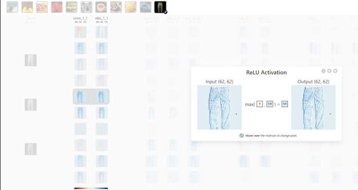
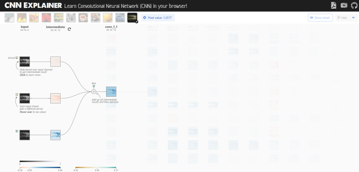

Resultados esperados: Camiseta vs. Pantalón (CNN)
Objetivo: Analizar cómo los filtros convolucionales capturan formas geométricas asociadas a prendas de vestir y cómo estas representaciones guían la clasificación entre categorías similares.
Resumen ejecutivo
- Camiseta: curvas superiores, mangas, estructura en “T” y curvatura del cuello.
- Pantalón: líneas verticales largas, separación central, piernas paralelas, estructura estrecha y bordes inferiores horizontales.
- Rotación 90°: reduce la precisión; la orientación afecta las activaciones y la confianza.
- Flujo de capas: Conv1 → Conv2 → Flatten → Densa/Softmax.
- Nota: esta página muestra resultados esperados pre-cargados; no ejecuta la CNN.
Imágenes de referencia



Tabla comparativa (Sí/No)
| Tipo de filtro | Camiseta | Pantalón |
|---|---|---|
| Curvas superiores | Sí | No |
| Mangas | Sí | No |
| Curvatura del cuello | Sí | No |
| Líneas verticales largas | No | Sí |
| Separación central | No | Sí |
| Bordes exteriores | Sí | Sí |
| Contrastes y contornos | Sí | Sí |
| Simetría | Sí | Sí |
| Estructura en “T” | Sí | No |
| Piernas paralelas | No | Sí |
| Estructura estrecha | No | Sí |
| Bordes inferiores horizontales | No | Sí |
✓ Sí
✗ No
Exclusivos y compartidos
Exclusivos Camiseta
Curvas superiores
Mangas
Estructura en “T”
Curvatura del cuello
Exclusivos Pantalón
Líneas verticales largas
Separación central
Piernas paralelas
Estructura estrecha
Bordes inferiores horizontales
Compartidos
Bordes exteriores
Contrastes y contornos
Simetría
Puntos clave
Camiseta
- Bordes horizontales y verticales, curvas suaves y contrastes.
- Curvatura del cuello.
- Bordes diagonales de las mangas y simetría de mangas.
- Contorno ancho del torso y bordes superiores curvos (estructura “T”).
- ReLU resalta mangas, laterales y cuello.
- Ausencia de separación central: masa principal continua del torso.
- Texturas internas poco destacadas; predominan respuestas en el contorno.
Pantalón
- Líneas verticales y bordes rectos.
- Separación entre piernas (división/separación central).
- Simetría longitudinal y contorno alargado.
- Bordes rectos inferiores; forma completa reconstruida por combinación de bordes.
- Costados y área interna entre piernas resaltadas por la convolución.
- Bordes inferiores horizontales definidos en cada pierna.
- Mayor respuesta en costuras laterales y ejes verticales prolongados.
- Curvas superiores casi ausentes; predominan líneas y ángulos rectos.
Pantalón 90°
- Al rotar 90°, líneas verticales pasan a horizontales.
- Activaciones menos precisas y pérdida parcial de señales clave.
- Disminuye la confianza de la red; la orientación afecta el rendimiento.
- La separación central pierde prominencia; los dobladillos pasan a los laterales.
- Puede favorecer activaciones parecidas a “camiseta” por silueta más apaisada.
Proceso de capas (resumen)
- Primera capa convolucional (Extracción Local): detecta bordes, curvas y contrastes; comienza a delinear siluetas (mangas y curvas superiores en camiseta; líneas verticales y separación central en pantalón).
- Segunda capa convolucional (Composición Espacial): combina bordes/rasgos simples para formar patrones más complejos (estructura en “T” de la camiseta; contorno alargado y piernas paralelas del pantalón).
- Flatten (Transición Dimensional): convierte los mapas de activación 2D en un vector 1D unidimensional para conectar con las capas densas. Pierde la estructura espacial pura pero conserva la existencia de patrones.
- Capa densa + Softmax (Clasificación Global): pondera las características extraídas y produce probabilidades finales de clase (mayor para la prenda correspondiente).
Metodología y supuestos
- Imágenes simples en fondo blanco y vista frontal para aislar la silueta.
- Preprocesamiento típico: escalado/normalización y posible conversión a escala de grises.
- Arquitectura conceptual: dos capas convolucionales con ReLU, Flatten y capas densas con Softmax.
- Sin aumentos de datos (rotaciones, recortes) en esta referencia; por eso la orientación impacta.
Evidencia por característica (qué mira la red)
Curvatura del cuello arco superior central en camiseta; ausente en pantalón.
Mangas diagonales laterales y extensiones simétricas de hombros; no presentes en pantalón.
Curvas superiores hombros/cuello de camiseta; el pantalón presenta bordes superiores más rectos.
Líneas verticales largas ejes de las piernas y costuras del pantalón; poco presentes en camiseta.
Separación central franja de baja activación entre piernas; inexistente en camiseta.
Piernas paralelas dos bandas verticales relativamente equiespaciadas en pantalón.
Estructura estrecha contorno alargado y menos ancho que la camiseta.
Bordes inferiores horizontales terminaciones rectas de cada pierna.
Estructura en “T” combinación de torso + mangas en camiseta, visible desde conv2.
Limitaciones y confusiones frecuentes
¡Atención al sesgo de posición! La red asume que la prenda está recta. Las rotaciones intermedias (45°) o invertidas (180°) degradan drásticamente las activaciones si el modelo no entrenó con data augmentation.
- Camisetas sin mangas o muy ajustadas pueden perder la distintiva forma en “T”.
- Pantalones cortos/bermudas reducen las líneas de piernas paralelas y desplazan los bordes inferiores.
- Vestidos, monos u otras prendas pueden mezclar señales de ambas categorías confundiendo al clasificador.
- Fondos no uniformes, arrugas profundas u oclusiones ensucian la detección de la separación central y los contornos puros.
Recomendaciones de mejora
Aplicar estas técnicas en la fase de entrenamiento mejora la generalización y robustez del modelo en el mundo real.
- Augmentations: entrenar aplicando rotaciones al azar, volteos horizontales (flips), recortes (crops) y variaciones de iluminación/fondo.
- Arquitectura Robusta: usar Global Average Pooling (GAP) para reducir la sensibilidad espacial estricta, o incorporar invariancia a rotación.
- Regularización: aplicar Batch Normalization para estabilizar capas intermedias y Dropout en capas densas para evitar sobreajuste.
- Explicabilidad Visual: integrar herramientas como Grad-CAM para mapear un mapa de calor sobre la imagen original y verificar qué píxeles originaron la predicción.
Glosario rápido
- Filtro/Kernel: ventana de convolución que extrae un patrón (p. ej., borde).
- Mapa de activación: respuesta espacial de un filtro sobre la imagen.
- ReLU: función max(0, x) que mantiene activaciones positivas.
- Flatten: conversión de mapas 2D a vector 1D para capas densas.
- Softmax: normaliza puntuaciones en probabilidades por clase.
- Separación central: espacio entre piernas que distingue al pantalón.